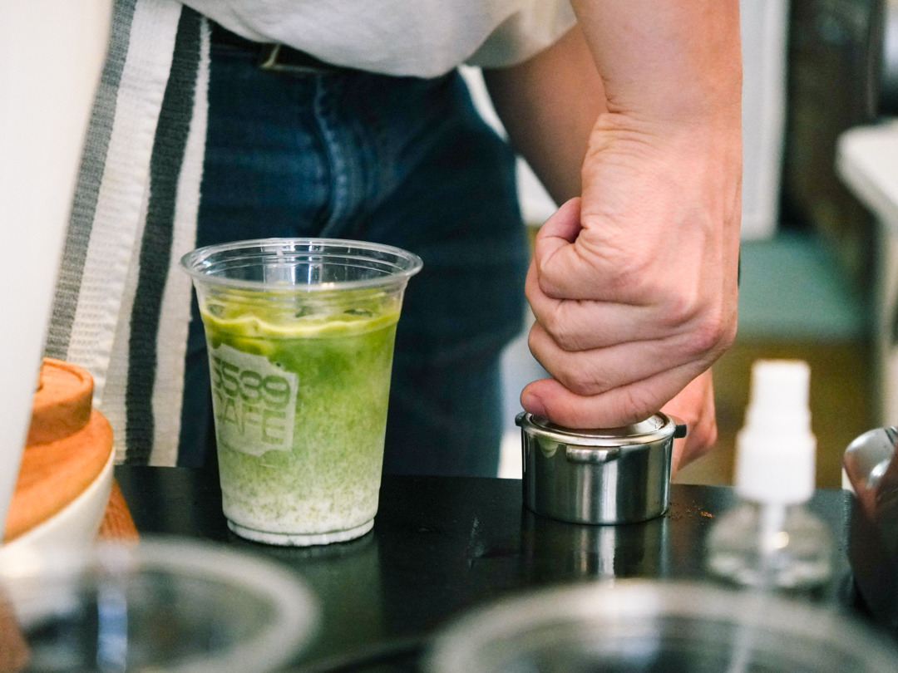
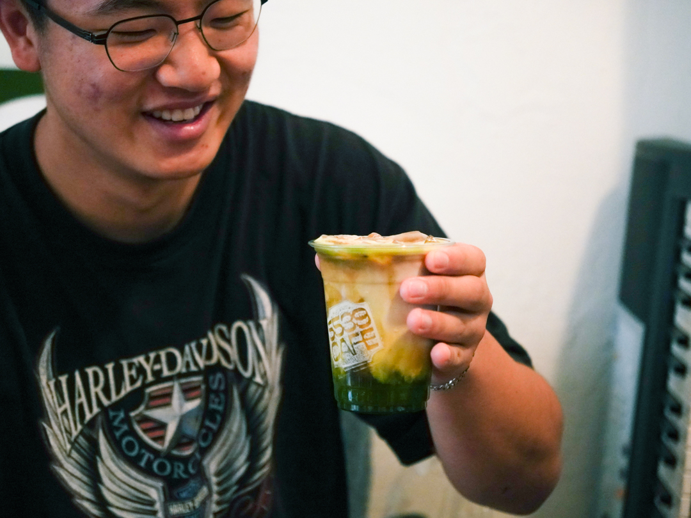
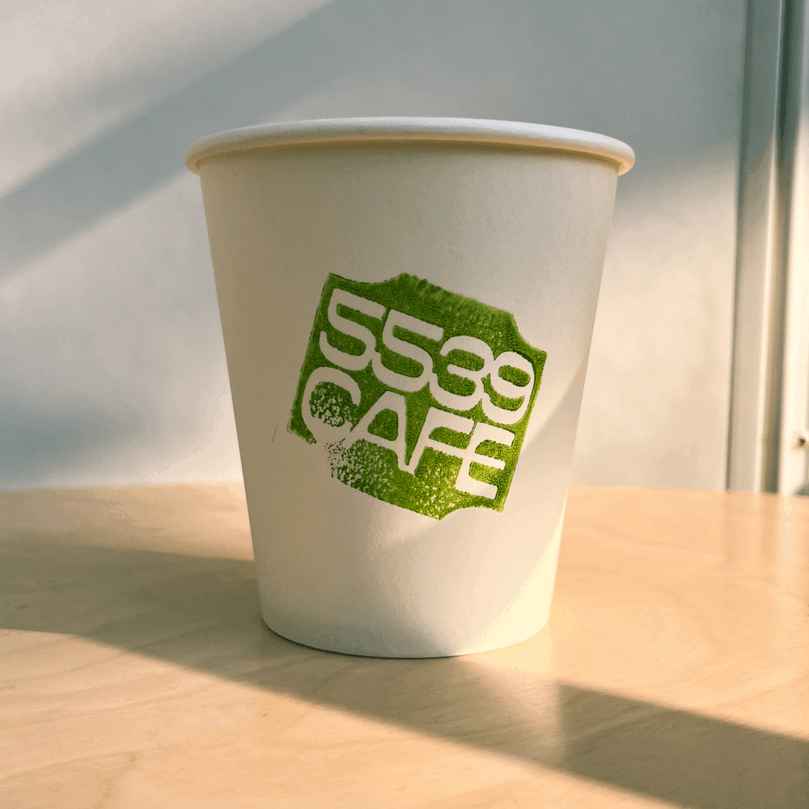
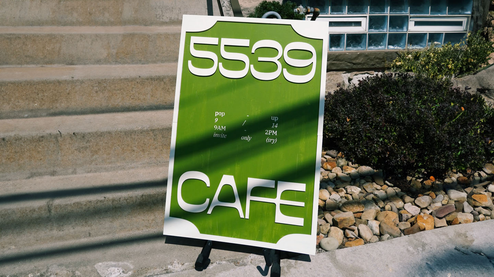
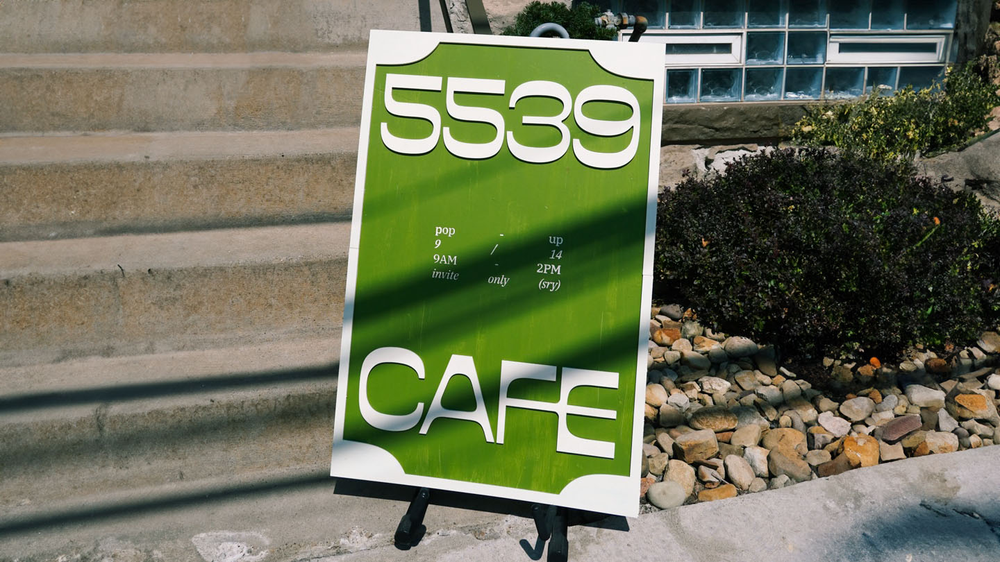

-
5539 Cafe
Pop-up Identity -
A down-to-earth, place-based identity for a cafe pop-up hosted by and for friends.
- 
-
When my good friend Hikari approached me to do a casual home cafe where we invite a few good friends over and have good coffee and matcha, I knew this would be one of the few chances we'd be able to do something like this ever. So, to make it a little more special, we decided to go all out on the identity of our little event, transforming what could've been a casual hangout to something alive, that highlights the uniqueness of the time and space we were filling with lattes and daifuku and all the people we love.
-
Time
Role
Credits -
3 weeks
Sole Designer
Photography — Emma Tong -
 A logo pulling forms from the unique number plaque.
A logo pulling forms from the unique number plaque.
- 
-

-

-

-  Handmade linoleum printing ensures that no one cup that is the same.
-

 
